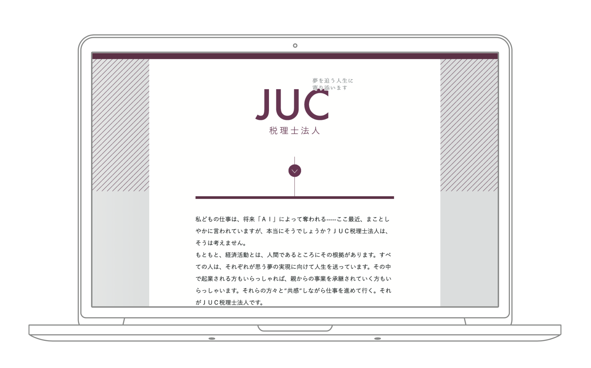
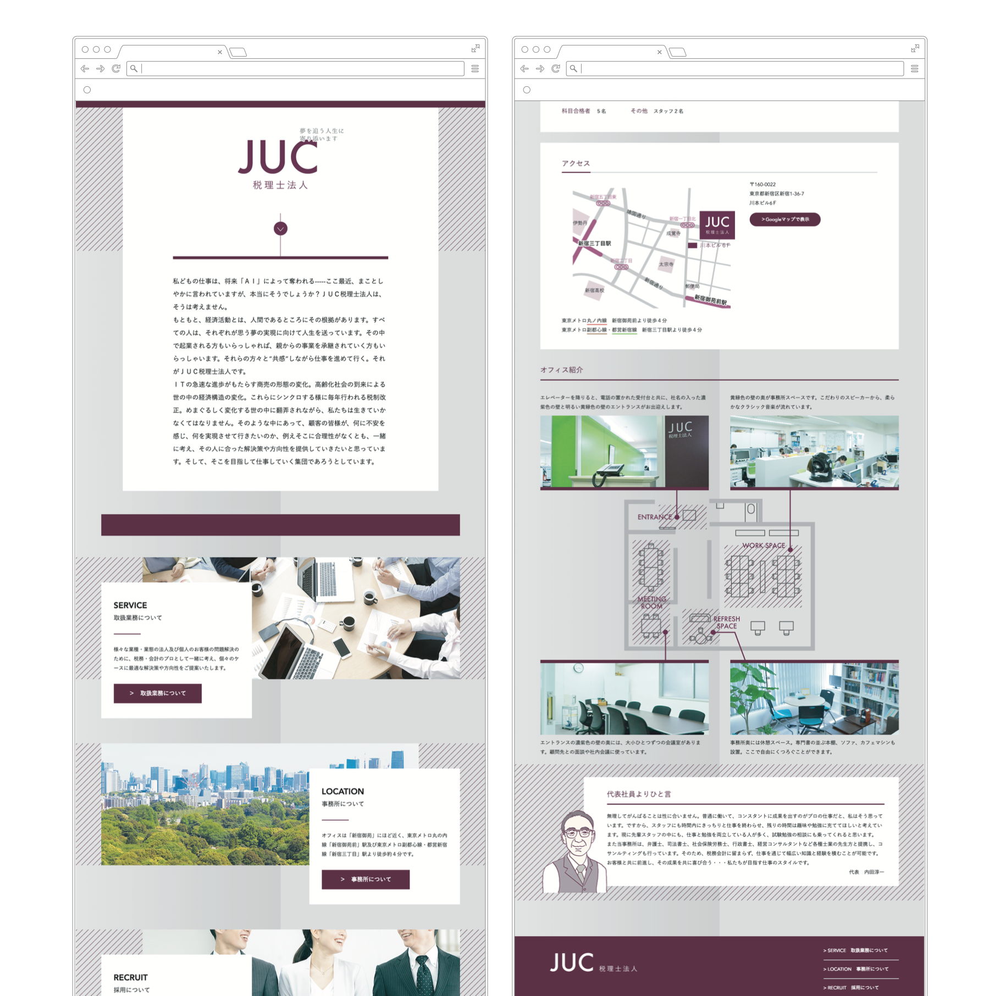

JUC税理士法人
ウェブサイト
2018. 07


2018. 07
事務所の看板などに使われている濃い紫色を使用したいとのご依頼の元、グラデーション背景や斜線などの図形を組み合わせ、落ち着いた雰囲気ながらも堅い雰囲気になり過ぎないバランスを意識しました。
サイト制作にあたり代表の内田先生からいただいた理念のテキストが素晴らしく、ご本人の静かな熱意を持った人間性ともマッチしていると感じ、サイトの設置意図としては顧客拡大では無いとのお話しもあり、あえてトップに長文をそのまま配置する構成としました。
＜ BACK
© Moeri Ito